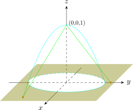

1.6 Lines
Suppose we know that the complex point lies on line, and it makes an angle \(\theta \) with the real axis, so its
slope is \(\tan \theta \). Then
\[\operatorname {arg}(z - a) = \begin {cases} \theta \\ \pi - \theta \\ \end {cases}\]
defines the locus of points \(z\) on the line.
Also, \(\operatorname {arg}(z - a) = \theta \) represents a half line from a fixed point \(a\).
Suppose the required line is the perpendicular bisector of the line joining two points \(a\) and \(b\). Then the
locus of \(z\) is given by \(\, \left |z - a\right | = \left |z - b\right |\)
Example 1.13. Trace the locus defined by \(\, \operatorname {arg}(z = 3) = \tan ^{-1}(2)\)
Solution
Let \(z = x + iy\), then \(\, \operatorname {arg}(x + 3 + iy) = \tan ^{-1}(2)\)
\[\tan ^{-1}\Bigg (\frac {y}{x + 3}\Bigg ) = \tan ^{-1}(2)\]
\[\frac {y}{x + 3} = 2\]
\[\implies \quad y = 2x + 6\]
\(\mathbb {C}\cup \{\infty \}\)
Consider \(\mathbb {C}\) as contained in \(\mathbb {R}^3\) in the form \(\, x + iy \longleftrightarrow (x,y) \longleftrightarrow (x,y,0)\) in the \(x-y\) plane in \(\mathbb {R}^3\).

Consider \(\, S = \big \{ (x,y,z):\, x^2 + y^2 +z^2 = 1\big \}\)
When \(z = 0:\, x^2 + y^2 = 1\)
\(\mathcal {Z} = t(0,0,1) + (1-t)(x,y,0)\), \(\, t \in \mathbb {R}, \, z \in \mathbb {C}\) is a straight line in \(\mathbb {R}^3\) connecting \((0,0,1)\) to \((x,y,z), \, z \in \mathbb {C}\).
\(\mathcal {Z} = t\big ((1-t)x, (1-t)y, t\big )\)
Putting on a unit sphere, we have
\[\big (1 - t\big )^2 x^2 + \big (1 - t\big )^2 y^2 + t^2 = 1\]
Since \(\, \left |z\right |^2 = x^2 + y^2\) \(\implies \, \big (1 -t\big )^2\,\left |z\right |^2 + t^2 = 1\)
\(t\neq 1\,\) this corresponds to \((0,0,1)\)
\begin {align*} \implies \quad 1 - t^2 & = \big (1- t\big )^2\,\left |z\right |^2\\\\ 1 - t^2 & = \left |z\right |^2 + t^2 \left |z\right |^2 - 2t\left |z\right |^2 \end {align*}
\[\implies \quad t^2\big (\left |z\right |^2 + 1\big ) - 2 t \left |z\right |^2 + \left |z\right |^2 - 1= 0\]
\[ t = \frac {\left |z\right |^2 - 1}{\left |z\right |^2 + 1}\]
\begin {align*} \therefore \quad \mathcal {Z} & = \Bigg ( \frac {2x}{\left |z\right |^2 + 1}\,,\, \frac {2y}{\left |z\right |^2 + 1}\,,\, \frac {\left |z\right |^2 - 1}{\left |z\right |^2 + 1}\Bigg )\\\\ & = \Bigg ( \frac {z + \overline {z}}{\left |z\right |^2 + 1}\,,\, \frac {-\big (z - \overline {z}\big )}{\left |z\right |^2 + 1}\,,\, \frac {\left |z\right |^2 - 1}{\left |z\right |^2 + 1}\Bigg ) \end {align*}
If we are given a point \(\mathcal {Z}\) on \(S\), then \(z\) on \(\mathbb {C}\) can be found \(\, z = \frac {x_1 + ix_2}{1 - x_3}\,\) where \(\mathcal {Z} = (x_1, x_2, x_3)\)
\(\mathbb {C}\cup \{\infty \} \longleftrightarrow S\longleftarrow \) Riemann sphere
Can give a distance function on \(\, \mathbb {C}\cup \{\infty \}\)
\[d(z,z') = \begin {cases} d(\mathcal {Z},\mathcal {Z}')\, (\text {in}\,\mathbb {R}^3)\,\text {where}\,z,z' \neq \infty \\\\ \frac {2}{\Big (1 + \left |z\right |^2\Big )^{1/2}}\quad \text {if}\quad z' = \infty \\ \end {cases} \]
\[d(z,z') = \begin {cases} \Big [\big (x_1 -x_1'\big )^2 + \big (x_2 - x'_2\big )^2 + \big (x_3 - x'_3\big )\Big ]^{1/2}\\\\ \frac {2}{\Big (1 + \left |z\right |^2\Big )^{1/2}}\quad \text {if}\quad z' = \infty \\ \end {cases} \]
This correspondence is called sterographic projection
\begin {align*} \mathbb {C}\cup \{\infty \}\qquad a + \infty & = \infty \quad a\in \mathbb {C}\\ a\cdot \infty & = \infty \quad a\in \mathbb {C}\,,\quad a\neq 0\\ \frac {a}{\infty } & = 0\quad a\in \mathbb {C} \end {align*}
Questions on this section
Stuck on something here? Ask below and it stays attached to this topic.